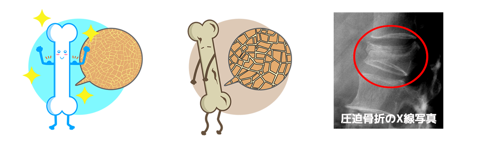
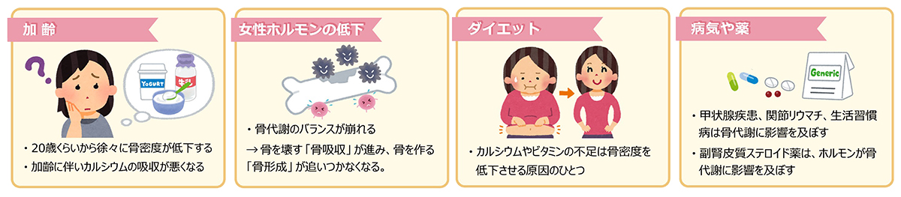
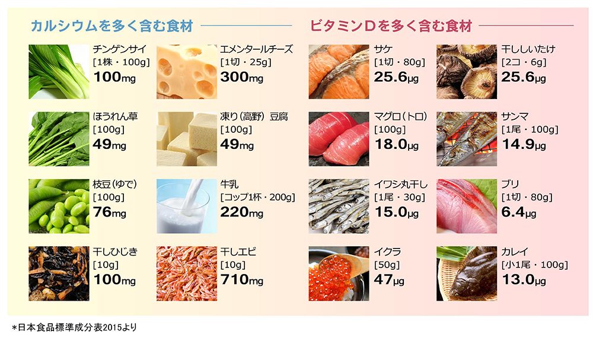
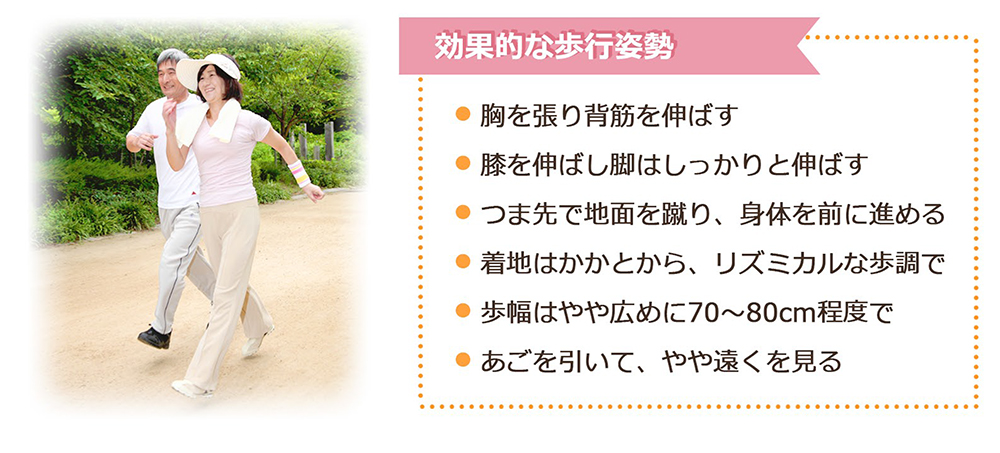

骨粗しょう症外来
骨粗しょう症とは
骨粗しょう症は、骨がもろくなって骨折しやすくなる病気です。
骨は、骨を溶かす「骨吸収」と新しい骨を作る「骨形成」を常に繰り返し、骨を健康的に保っています。
骨吸収と骨形成のバランスが崩れ、骨吸収の方が上回ってしまうと骨がもろくなり、骨折しやすくなってしまいます。
骨粗しょう症そのものは命を脅かす病気ではありませんが、骨粗しょう症による骨折は日常生活が不自由になったり、寝たきりになることに繋がり、健康寿命を著しく低下させる可能性があります。

骨粗しょう症の原因
もともとの骨密度や食生活の偏り、運動不足、日光に当たる時間が短い、喫煙など、さまざまな要因が絡み合って発症します。
骨粗しょう症の患者さんは60代ごろから増えてきますが、男性よりも女性の患者さんの方が約3倍ほど多く、女性の方が発症しやすいことが知られています。
女性ホルモン「エストロゲン」には骨吸収を緩やかにする作用がありますが、閉経によってエストロゲンは減少するため骨吸収が進み、女性は閉経後10年ほどで急激に骨密度が低下してしまうのです。

骨粗しょう症の検査
骨粗しょう症は症状に乏しく、骨折して初めて気づく方も多くいます。
骨の健康を保つためにも、定期的な検査をして自分の骨の状態を把握することが大切です。
当院では、半年に1回の骨密度測定と血液検査（骨代謝マーカー、カルシウムなど）を推奨しています。
骨折歴がある方はもちろん、女性は60歳、男性は70歳を目安に是非ご相談ください。
骨粗しょう症の治療
食事療法
丈夫な骨を作るには、カルシウムとカルシウムの吸収を促すビタミンDをあわせてとることが大切です。
バランスの良い食事を基本に意識して摂取しましょう。

運動療法
骨にカルシウムを蓄えるには「体重をかけること」が重要です。
日常生活の中で階段昇降や30分程度のウォーキングを取り入れ、運動量を増やしましょう。

薬物療法（内服、注射）
患者様の生活やご希望をお伺いした上で、医師が適したお薬を処方します。
継続した骨粗しょう症薬の服用が大切です。